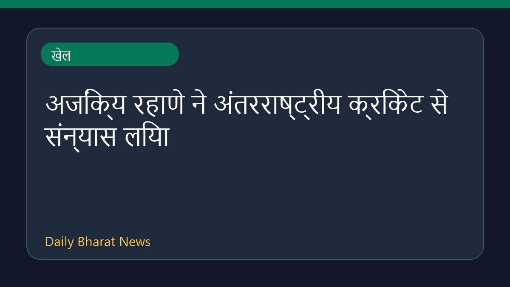

अजिंक्य रहाणे ने अंतरराष्ट्रीय क्रिकेट से संन्यास लिया

भारतीय बल्लेबाज अजिंक्य रहाणे ने अंतरराष्ट्रीय क्रिकेट को अलविदा कह दिया है। इस मौके पर भारतीय क्रिकेट कंट्रोल बोर्ड यानी बीसीसीआई ने उनके शानदार और प्रतिष्ठित अंतरराष्ट्रीय करियर को याद करते हुए उन्हें श्रद्धांजलि दी है। इसके अलावा, खेल जगत और मीडिया में उनके जुझारू टेस्ट प्रदर्शन और भारतीय बल्लेबाजी क्रम में उनके महत्वपूर्ण योगदान को भी याद किया जा रहा है। रहाणे को अक्सर भारतीय बल्लेबाजी का एक मजबूत और भरोसेमंद योद्धा माना गया है, जो जरूरत पड़ने पर हमेशा टीम के लिए तैयार रहते थे।
मूल स्रोत: Sports News Sources
Ajinkya Rahane retires from international cricket - The Hindu ↗
Ajinkya Rahane retires from international cricket - The Hindu ↗